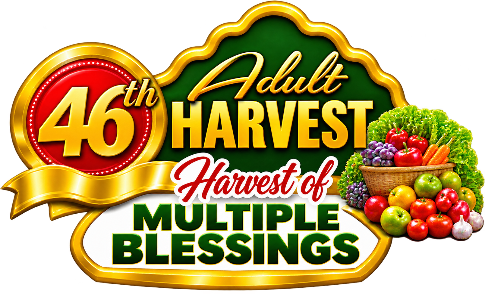

Harvest Photo Watermark
Upload • Add watermark • Download in original resolution
Your photo preview will appear here.
Your photograph is processed only in your browser.

Upload • Add watermark • Download in original resolution